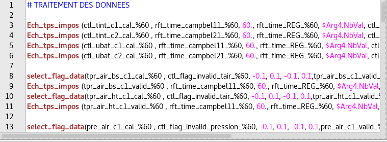
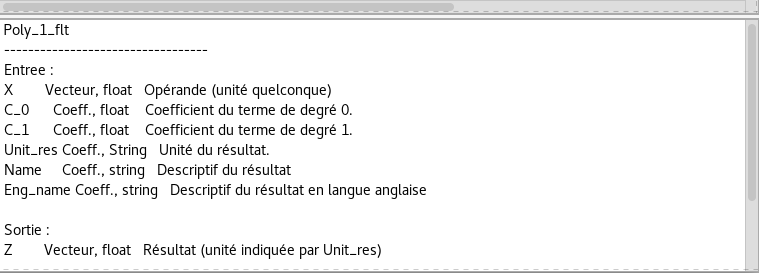
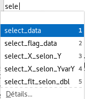
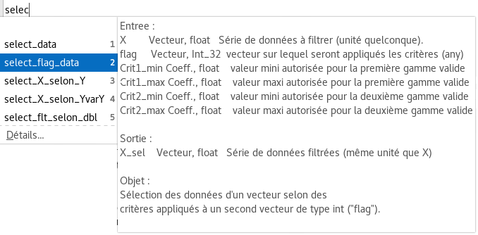

L'interface graphique
Créer un script
La zone de texte

C'est ici que vous pouvez écrire votre script de commandes. La coloration syntaxique permet de différencier les opérateurs, les vecteurs et les autres arguments.
Description de l'opérateur courant

Affiche la description de l'opérateur présent sur la même ligne que lecurseur.
L'autocomplétion

Lors de l'écriture, les arguments, les opérateurs et les vecteurs commençant par les caractères déjà écrits sont proposés. La touche ENTREE permet de valider une proposition.

Pour afficher le détail des opérateurs, vous pouvez cliquer sur le bouton détail. L'état ouvert (ou fermé) de la fenêtre de détail est sauvegardé jusqu'à la fermeture de l'application.